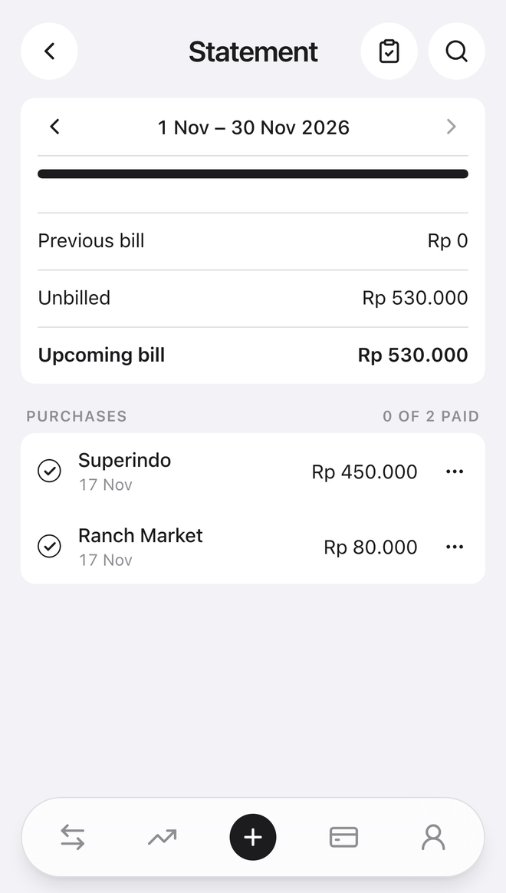
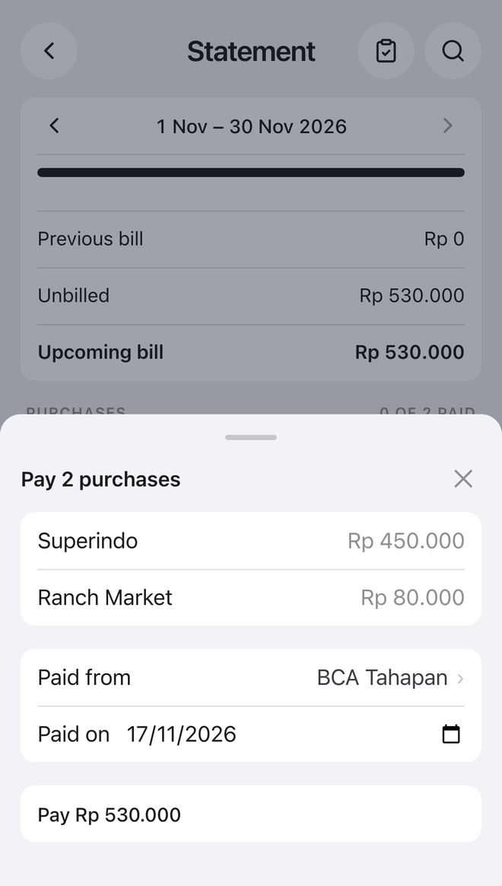
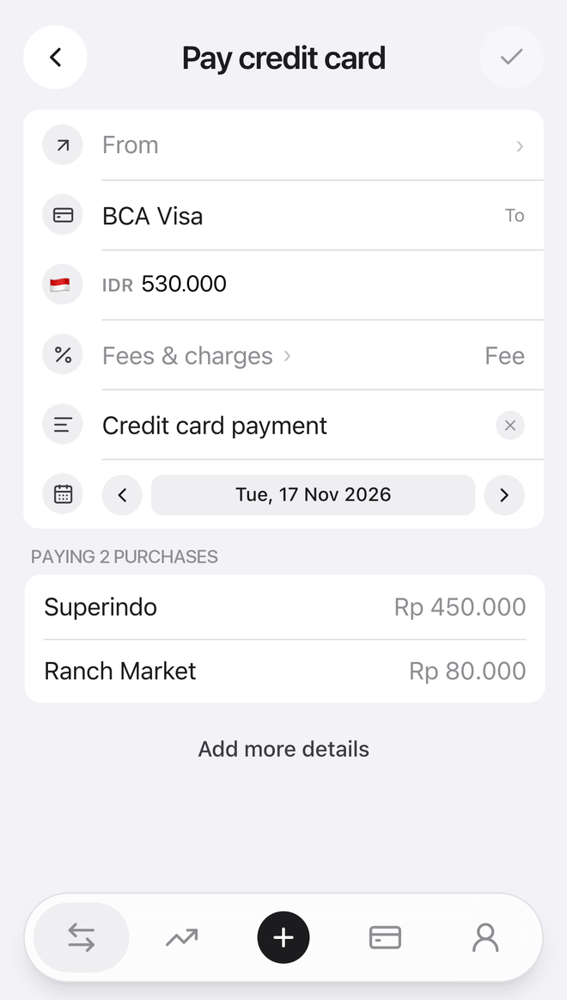

Invented example: Superindo Rp 450.000 and Ranch Market Rp 80.000 ticked on the BCA Visa statement, then the 💵 Pay button. TODAY = real screenshots. AFTER = the real "Pay credit card" screen (build 146) with the chosen purchases listed under it. Saving still marks exactly those purchases as paid, as today.
TODAYPurchases ticked
Tick purchases; the select bar's 💵 Pay opens the sheet.

TODAY"Pay 2 purchases" sheet
Older sheet: the list, Paid from, a plain date box, and a "Pay Rp 530.000" button. No Note, no Fees.

AFTERPay credit card
Same screen as the card's Pay: From blank, To the card (fixed), amount = the purchases ticked (fixed), Fees, Note, ‹ date ›; the purchases listed under "Paying 2 purchases".
